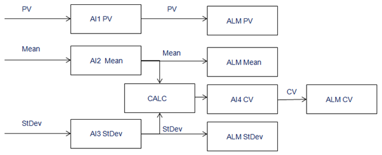

Theory of operation — Foundation Fieldbus only
The RMT_SPM_FF module template, designed for Foundation Fieldbus SPM devices, operates with a few differences from the HART modules. The AI Blocks (AI1, MEAN, and STDEV) are configured as Fieldbus shadow function blocks. These blocks are pre-configured to CHANNEL values of 1, 12, and 13 respectively, which correspond to the PV, Mean, and Standard Deviation in the 3051S FF Rev 23. The CV AI Block is not a Fieldbus shadow block.
Each AI block has a corresponding Alarm Detection (ALM) block. The CALC block copies the value and status of the OUT parameter of each AI block to the IN parameter of the corresponding ALM block. The ALM block is used to generate the alarms rather than the AI block, because the Alarms are dynamically enabled and disabled. Writing directly to the HI_ENAB or LO_ENAB parameters of a Fieldbus function block would require writing to Non-Volatile parameters of a Field Device, and result a warning message if the control module is downloaded. Instead, by using ALM blocks for alarms, the dynamic enabling and disabling of alarms is processed in the Controller.
The value and status from the AI blocks are copied to the ALM blocks using code in the CALC block, rather than using links. This allows the SPM data to be brought into the controller during Unscheduled Fieldbus communication time, rather than during scheduled communication. This reduced the load on the Fieldbus segment and gives the minimum effect on the segment macro-cycle.
